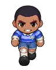

Wiki › Places › ☄️ Zone 2: Sandlot of the Stars (levels 25–50)
☄️ Zone 2: Sandlot of the Stars (levels 25–50)
Brazil Opponent levels: 20–40
How to get there
🧭 Path: from Campinho Village: Campinho Village → ☄️ Valley of the Celestial Stones → ☄️ Zone 2: Sandlot of the Stars (levels 25–50)
Opponents here (4)
| Name | Level | XP | What it drops | |
|---|---|---|---|---|
| Cheeky Skater | 20 | 220 | ||
 | Sliding Midfielder ×2 | 31 | 520 | |
| Fitness Coach ×2 | 36 | 700 | ||
| U-20 Defender | 40 | 900 |
Exits to
Signs
☄️ ZONE 2: SANDLOT OF THE STARS